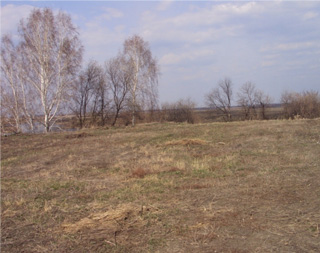
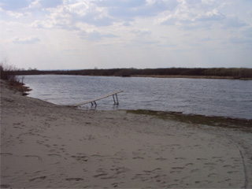

В поселке «Фирсова слобода–3» начались активные продажи земельных 3участков
31 июня 2014
Самый дорогой участок земли, который продается в Барнауле и находится в базе «Недвижимость Алтай», стоит 2 миллиона рублей. Он находится в 10 минутах от города (Первомайский район, садоводство «Энергетик»). Как рассказали в агентстве, которое выставило объект на продажу, площадь территории составляет 17 соток, которые находятся в собственности и еще 25 соток (как раз спуск к водоему), которые находятся в долгосрочной аренде. Участок абсолютно пустой, на нем можно разместить что угодно – летнюю резиденцию, базу отдыха, спортивные сооружения, частный пляж.
Высокая стоимость объекта обусловлена тем, что он находится в экологически чистой зоне вдали от шума, пыли и городской суеты. Территория имеет достаточно много зеленых насаждений и представляет собой уголок нетронутой природы. Кроме того, расположение на берегу протоки Оби делает его ценным местом отдыха – здесь можно организовать не только любые водные развлечения, но также и рыбалку (протока богата разными видами рыб).
На сегодняшний день, земельные участки, которые представлены в базе «Недвижимость Алтай», имеют различную площадь, место расположения и назначение. В зависимости от этих факторов их цена колеблется от 20 до 330 тысяч рублей.